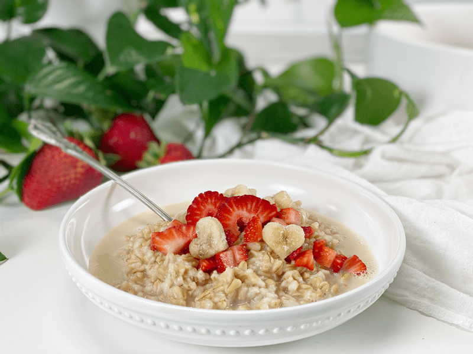
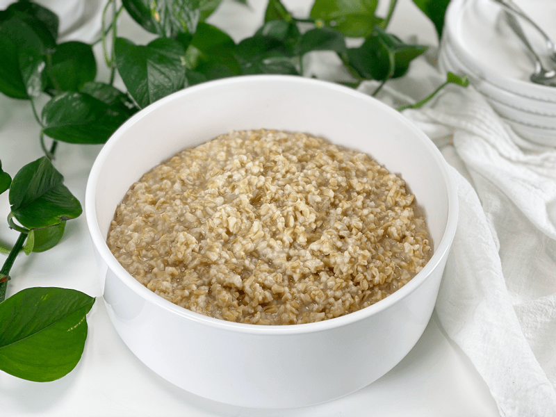
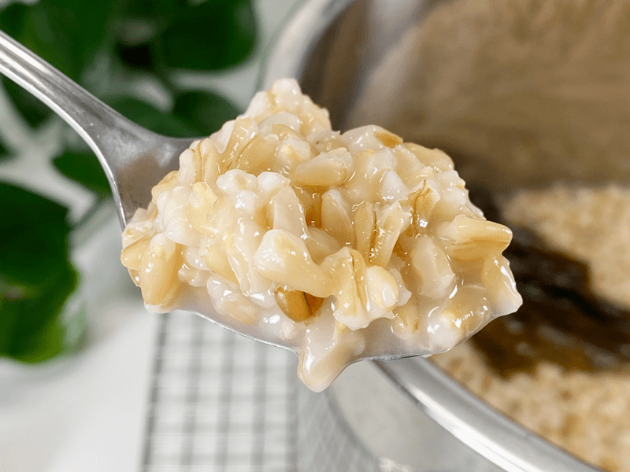
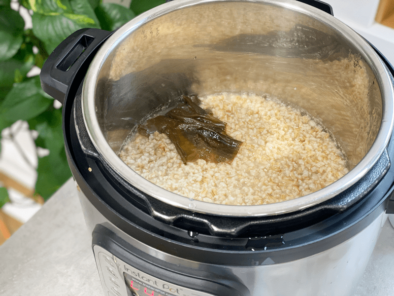
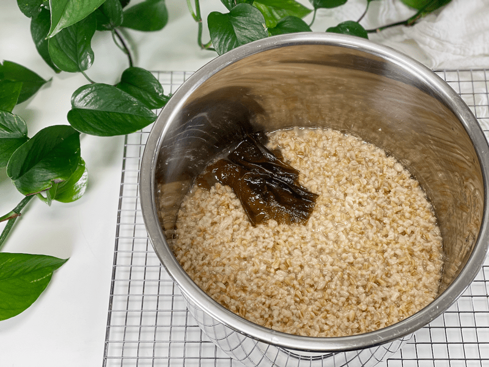
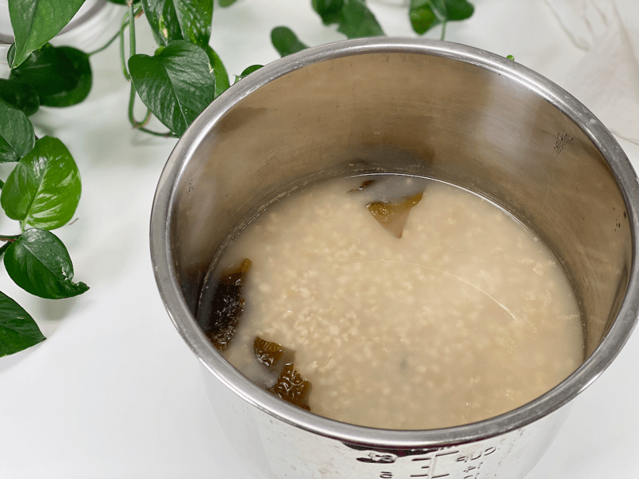
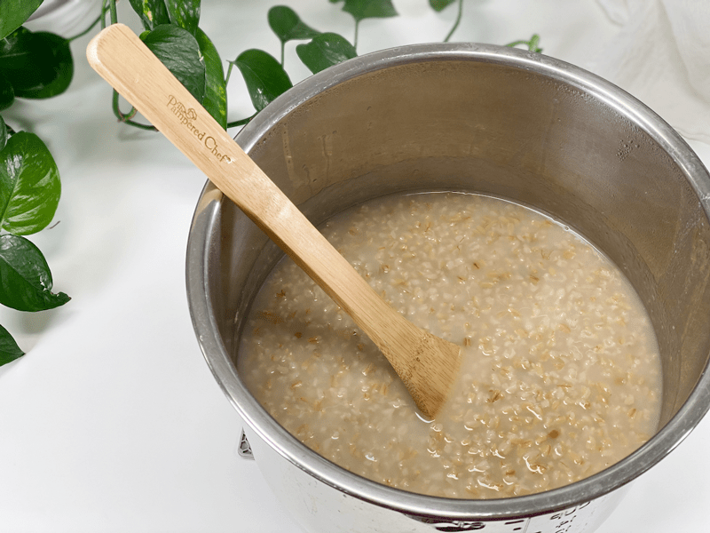

Whole Oat Groat Porridge | Breakfast Batch Cooking
With their hearty, chewy texture and nutty flavor, oat groats are great for grain bowls, salads, stews, soups, and hot cereal. Oat groats (also known as whole oats) retain the beneficial bran, germ, and endosperm. Just like with any grain, the more processed oats are, the more their flavor and nutrients are compromised. It is always my goal never to compromise when it comes to feeding my body.

Throughout my life, my love affair with oats has shifted. In my twenties, I started with instant oat packages, but it wasn’t long before I wanted to up my nutrients, so I switched to rolled oats. Better, but I wanted MORE nutrients, so I shifted over to steel-cut oats. Even better, but I wanted MORE (am I ever content?!) so, I swapped them out with WHOLE OAT GROATS… Ahhh, now that’s more like it.
I will always toggle between rolled, steel-cut, and whole oat groats. But right now, I am digging these plump, chewy, whole oats that leave me full, satiated (on all levels), and happy. If you wish to take them to yet another nutritional level, sprout them before cooking. I have a post on how to do that (here). I like to think of food this way: When we go shopping at the grocery store, don’t we usually look for the best deal? We find it worth the extra time to compare prices and quality. The same goes when preparing our food at home. It’s worth the time to extract every last nutrient. At least, that’s my opinion, and I am sticking to it.

T’oat’ally Healthy!
Oat groats have a lot of health benefits, but today, I am going to tap into just two of them: fiber and starch.
Soluble Fiber (beta-glucan)
- The primary type of soluble fiber in oats is beta-glucan, which has been proven to help slow digestion, increase satiety, and suppress appetite.
- Beta-glucan can bind with cholesterol-rich bile acids in the intestine and transport them through the digestive tract and eventually out of the body.
- Beta-glucan fiber can also help to prevent sharp rises in blood sugar and insulin levels after eating a meal. Even though oat groats are a carbohydrate-rich food, due to the fact that they are minimally processed, they can be incorporated into a diabetic diet. The glycemic load of less-processed oats like steel-cut is low to medium, while highly processed instant oats have a high glycemic load.
Starch
- The starch in oats is different from the starch in other grains. It has a higher fat content and a higher viscosity (which is its ability to bind with water).
- There are three types of starches are found in oats. Rapidly digested starch (7%), is quickly broken down and absorbed as glucose. Slowly digested starch (22%) is broken down and absorbed more slowly. Lastly, my favorite type of starch is resistant starch (25%), which functions like fiber, escaping digestion, and improving gut health by feeding your friendly gut bacteria.

Techniques and Tips
- Regardless of the cooking method, to avoid gummy, unglamorous oats, do not stir them throughout the cooking process. It’s hard, I know, but trust me on this one.
- Soaking oat groats not only helps soften them for cooking, but I do it mainly for health reasons. Like other grains, the outside layers of raw oat groats contain phytic acid, which may inhibit the absorption of some minerals. I also find it easier on my digestive system, which leads me to my next nutrient tip…
- Adding a strip of kombu seaweed is another nutrient weapon that I like to pull out and use when cooking grains, beans, and soups. If you have weaved in and out of my other cooked recipes, you may have noticed that I use it quite often. It doesn’t add any flavor to the dish, but it does add extra vitamins such as A, C, E, B1, B2, B6, and B12. You can read more about it (here).
Oats for Meal Prep
A batch (or two) of oat groats holds well in the fridge for 5-7 days. If you are looking for a way to prepare your breakfast in advance for an easy grab-and-go option, this is it. I have been doing this for quite some time and I LOVE it. The oats will thicken in the fridge, but I add a little boiling water to thin the porridge and warm it for eating. By doing this, you can control the texture that is perfect for you!
 Ingredients
Ingredients
Yields 6 cups
- 2 cup whole oat groats, soaked
- 6 cups water
- 1 strip kombu seaweed
Preparation
Pre-Soak Oat Groats
- Rinse the groats and place in a medium-large sized glass bowl. Add enough water to cover by a few inches. Stir in 2 Tbsp of raw apple cider vinegar or lemon juice, cover with a clean dish towel, and leave on the counter overnight.
- After soaking, the water now contains the phytates that have been released through soaking, so it is best to drain and rinse the oats prior to cooking.
Instant Pot Method (my favorite)
- Place the soaked, rinsed oat groats into the Instant Pot along with the water and kombu seaweed. Secure the lid and make sure the pressure valve is turned to “Sealing.”
- For a thicker porridge, use 6 cups of water.
- For a creamier porridge, use 8 cups of water. If you opt for this version, there will be quite a bit of water sitting on top of the cooked oats. Stir it in and let it rest for up to an hour. Stir again, and it will be perfectly creamy.
- Pressure the “Manual” button and adjust the cooking time to 14 minutes on high pressure.
- Once the machine beeps (indicating that it is done cooking), let the pressure naturally release–this will take roughly 20 minutes.
Stove Top
- Bring 6 cups of water to a boil in a pot.
- Adding the oats after the water is boiling will make for a chunkier, separated, and texturized oatmeal.
- If you are looking for a more creamy oatmeal, add the oats to the pot with the cold water, then bring to a boil, and down to a simmer.
- Add 2 cups of soaked and rinsed oat groats, return to a boil, then reduce the heat to medium-high and cook uncovered until soft, about 30 minutes. Drain off cooking water, then serve.
Storage
When it comes to storing hot foods, we have a 2-hour window. You don’t want to put piping hot foods directly into the refrigerator. However, If you leave food out to cool, and forget about it you should, after 2 hours, throw it away to prevent the growth of bacteria. (source) Large amounts should be divided into smaller portions and put in shallow covered containers for quicker cooling in a refrigerator that is set to 40 degrees (F) or below.
- Fridge – In a sealed container, it will keep for up to 7 days.
- Freezer – You can also freeze the porridge in individual or meal-sized portions for up to 3 months.
Reheating
- The porridge will become thicker after cooling down, to the point that you could use a butter knife to cut out your serving. To thin it down a little a bit, add a splash or two or three of plant milk or hot water to the porridge, stirring it well to create a pleasant and creamy porridge—or don’t! You make the call on what texture you want. You are in the captain’s seat on this one.
- If pulling the porridge from the freezer, let it thaw in the fridge overnight.
-

-
This is what the porridge looks like when cooked with 6 cups of water.
-

-
As you can see, there isn’t standing water. Using 6 cups of water for cooking is great if you have family members who enjoy different consistencies. Enjoy as is for a thicker porridge or add a splash of plant-based milk to make it creamier.
-
-
I always try to take close up photos so you know what to expect.
-

-
This is what the porridge looks like when cooked with 8 cups of water. As you can see there is some water sitting on top…
-

-
Remove the kombu seaweed, stir, and let it sit for an hour to thicken. Or you can pour into a container with an airtight lid, place in the fridge, and enjoy throughout the week. It will thicken once chilled.
© AmieSue.com